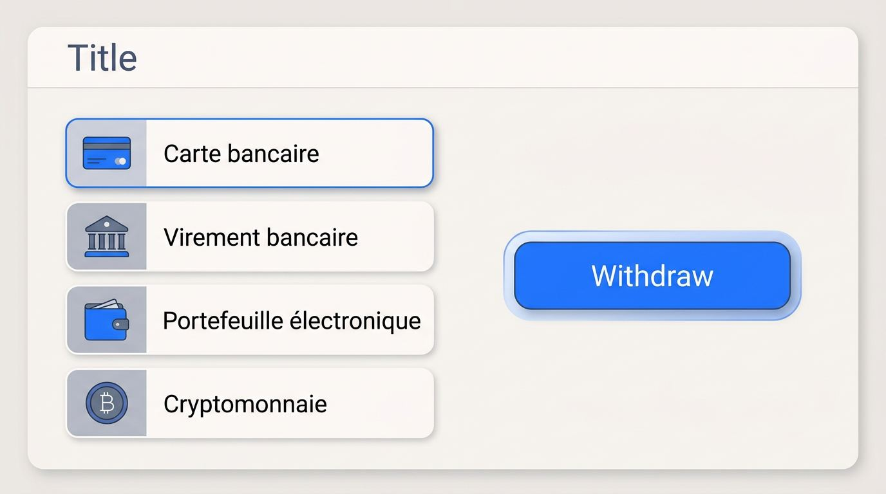
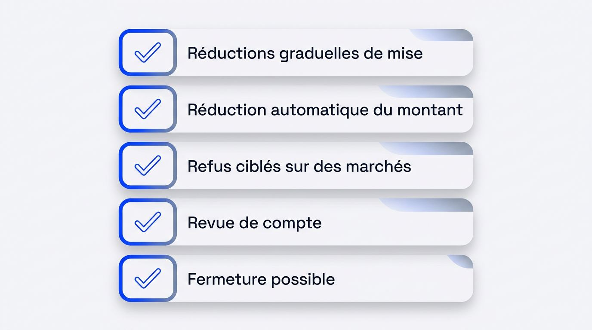

Vous voulez engager des sommes élevées depuis la France sans voir vos paris réduits après quelques gains. La capacité réelle d’un bookmaker sans limite de mise se mesure à la somme acceptée sur vos marchés, au plafond de paiement et au traitement des retraits. Votre choix doit aussi préserver l’accès au compte lorsque votre volume de jeu augmente.
Cette sélection constitue un point de départ pour les parieurs basés en France qui recherchent un bookmaker pour gros parieurs, une offre de bookmaker haute mise et des marchés adaptés à leur volume de jeu. Le meilleur site dépend de votre mise habituelle, des compétitions visées, des retraits envisagés et de votre besoin d’accès durable, bien avant un bonus ou un bonus de bienvenue.
Cette sélection est régulièrement revue et mise à jour.
Plateformes à comparer
Les offres sont chargées automatiquement depuis la source du comparatif.
Comparez un bookmaker sans limite de mise au-delà des promesses
L’expression bookmaker sans plafond de mise ou bookmaker sans limite de pari ne décrit utilement une offre que si les conditions appliquées au pari, au gain et au retrait sont publiées. Votre comparaison doit suivre le parcours complet du solde, depuis la limite de mise sur un site de paris jusqu’au versement effectif d’un gain important.
Les critères suivants résument cette capacité. Ils vous permettent d’évaluer les conditions documentées.
Évaluez la capacité de mise, de gain et de retrait
Une mise maximale élevée peut être réduite par le plafond de gains bookmaker ou par le fractionnement d’un retrait de gros gains. La limite de mise d’un bookmaker peut varier selon le sport, le marché, l’événement, la cote et l’historique du compte des joueurs. Un plafond de gains par pari et par compte peut ainsi réduire le montant autorisé lorsque le gain potentiel excède la somme admise.
| Catégorie | Ce qu’elle encadre | Conséquence pratique |
|---|---|---|
| Mise maximale par pari | Le montant engagé sur une sélection | Peut changer selon la ligne ou l’événement |
| Plafond de gains | Le gain potentiel réglable | Peut limiter une mise pourtant disponible |
| Plafond journalier ou hebdomadaire | Le total des mises sur une période | Réduit la capacité de jeu répétée |
| Retrait journalier ou mensuel | Le montant transférable vers votre moyen de paiement | Peut étaler la disponibilité d’un solde gagnant |
Comparez les cotes, la marge et la profondeur des marchés
Une forte mise ne présente d’intérêt que si la cote demeure compétitive au montant demandé sur la ligne choisie. La marge bookmaker désigne la part intégrée par l’opérateur à l’ensemble des cotes d’un marché. Une marge plus basse peut améliorer le prix proposé et le taux de retour au joueur théorique, sans garantir un résultat rentable à long terme.
La liquidité des marchés de paris correspond au volume de demande et à la capacité de risque disponible autour d’une ligne. Comparez donc les cotes décimales sur des marchés strictement identiques, par exemple le même total de buts, le même handicap et les mêmes conditions de règlement.
- Vérifiez que la cote porte sur la même ligne et le même marché.
- Comparez la marge sur l’ensemble des issues disponibles.
- Contrôlez si la liquidité absorbe votre mise sans forte modification de cote.
- Préférez des cotes compétitives régulièrement disponibles à un prix isolé impossible à prendre au montant prévu.
Recherchez des indices de gestion des gros gains
La capacité de paiement d’un bookmaker sans restriction de mise se vérifie à partir de documents contrôlables. Un retrait bookmaker rapide annoncé sans conditions précises ne renseigne pas sur le traitement d’un montant élevé.
- Consultez les règles publiées de paris, de plafonds de gains, de paiement et de retrait.
- Demandez au service client une réponse écrite sur les limites applicables et l’identité de la licence étrangère.
- Vérifiez le processus de contrôle d’identité exigé pour utiliser le compte et retirer les fonds.
- Identifiez les conditions de paiement ainsi que la voie de règlement des litiges prévue par la juridiction concernée.
- Considérez les retours de joueurs gagnants, l’ancienneté financière et l’historique d’exploitation comme des indices externes, sans les traiter comme une garantie.
Comprenez pourquoi vos limites varient selon le marché
La liquidité reste le premier facteur de la mise réellement acceptée, y compris sur une même plateforme et pour des paris à gros enjeux. Les marchés de paris sportifs appliquent ensuite leurs propres plafonds d’exposition, auxquels peuvent s’ajouter des conditions liées au compte.
N’utilisez des fourchettes chiffrées que lorsque les conditions publiées sont à jour ou qu’un test direct les confirme. Aucun opérateur ne peut garantir l’acceptation de chaque montant proposé.
Reliez la liquidité aux cotes et à la taille des compétitions
Les grands événements concentrent davantage d’activité et permettent généralement à l’opérateur de gérer une exposition financière plus élevée. Les marchés de Ligue 1, de Ligue 2, de Ligue des champions et des grandes ligues européennes figurent souvent parmi les segments à forte liquidité, sans que chaque ligne dispose de la même profondeur.
Une cote peut évoluer et réduire le montant accepté lorsque l’exposition sur une issue augmente. Un bookmaker pour gros mises ou un bookmaker high stakes doit donc être évalué marché par marché, y compris pour le rugby, le tennis, le cyclisme et les grands rendez-vous internationaux suivis en France.
- Marchés profonds : rencontres majeures de football européen, affiches de Top 14, grands tournois de tennis et étapes décisives très suivies.
- Marchés étroits : championnats mineurs, paris à long terme, divisions peu suivies ou marchés spécialisés, où une mise plus faible peut suffire à déplacer la cote.
- Couverture étendue : un catalogue peut proposer de nombreuses compétitions sans offrir une liquidité profonde sur chacune d’elles.
Identifiez les limites rencontrées en pratique
Un pari refusé ou réduit peut intervenir à la validation, provenir de l’exposition du marché, découler d’un compte limité chez un bookmaker ou apparaître à travers un plafond de gain. La limitation de compte d’un parieur gagnant doit être distinguée d’une contrainte temporaire sur une ligne précise.
- À la soumission, le site peut réduire automatiquement la mise proposée.
- Avant validation, un plafond d’exposition sur le marché peut empêcher de parier le montant souhaité.
- Après plusieurs paris, une limite de mise spécifique au compte peut persister sur certains marchés.
- Au règlement, un plafond de gains peut réduire le montant payable.
- Des refus répétés sur les mêmes marchés constituent un signal à évaluer, notamment lorsque les outils d’alerte sur les plafonds indiquent une restriction durable.
Choisissez un type de plateforme internationale adapté à votre capacité
Les bookmakers internationaux gèrent le risque selon des mécanismes différents, ce qui modifie la liquidité, les frais, les cotes et le traitement du compte. Un site de paris sans limite de mise ou un site de paris à mises illimitées doit donc être comparé selon sa manière d’accepter, d’apparier ou de répartir les paris, y compris pour les profils VIP et les gros parieurs français.
Comparez les bookmakers classiques et les modèles asiatiques
Les bookmakers classiques internationaux et les modèles asiatiques peuvent accepter des mises importantes sur des marchés liquides, mais leurs cotes et leurs seuils d’acceptation répondent à des mécanismes distincts.
| Modèle | Formation des cotes | Capacité de mise attendue | Point de contrôle |
|---|---|---|---|
| Bookmaker classique | Prix fixés et ajustés par l’opérateur | Variable selon son exposition | Conditions de compte et de marché |
| Modèle asiatique | Tarification proche de marchés de référence | Souvent plus adaptée aux marchés liquides | Mouvement de ligne et montant accepté |
Un bookmaker pour parieur professionnel peut proposer une tarification plus sensible aux informations de marché et aux pratiques de trading sportif. Sur un marché de niche, quelques centaines d’euros peuvent parfois entraîner une évolution de cote, alors que les marchés de masse disposent généralement d’une capacité plus large.
Évaluez les bourses, courtiers et sites crypto
Les bourses de paris, les courtiers et les modèles financés en cryptomonnaies proposent d’autres voies d’accès aux sites de paris et à leur liquidité. Une bourse de paris apparie les positions entre participants au lieu de laisser un bookmaker fixer seul l’ensemble des prix. La plateforme perçoit habituellement une commission, sans que ce modèle garantisse la liquidité d’un marché donné.
| Modèle | Fonctionnement | Principale contrainte |
|---|---|---|
| Bourse de paris | Liquidité appariée entre participants | Volume disponible sur la sélection |
| Courtier en paris sportifs | Accès intermédiaire à plusieurs lieux de pari | Dépendance au courtier et frais associés |
| Modèle crypto | Compte approvisionné en cryptomonnaies | Volatilité, frais de réseau et conversion |
Les moyens de paiement bookmaker influencent directement la valeur disponible pour parier et retirer. Les paris en cryptomonnaie ne constituent pas une solution par défaut pour les gros soldes, car les frais de réseau, le risque de devise et les conditions de règlement peuvent modifier fortement le montant final.
Choisissez un bookmaker sans limite de mise selon vos marchés
Le modèle de plateforme ne suffit pas, car la capacité dépend aussi du type de pari et de la couverture effectivement disponible. Comparer les marchés de paris sportifs permet de rechercher des lignes adaptées au football, au rugby, au tennis ou au cyclisme, notamment lors de Roland-Garros, du Tour de France, des compétitions européennes et des grands événements internationaux.
Handicaps asiatiques et lignes alternatives
Les marchés spécialisés apportent une souplesse utile lorsque leurs lignes proposent une profondeur compatible avec le pari envisagé. Le handicap asiatique est un marché à handicap conçu pour réduire les situations de nul ou de remboursement, selon la ligne retenue. Il peut offrir des lignes plus profondes sur certains événements, sans rendre un pari profitable par nature.
Une mise sur un handicap de -0,25 se divise ainsi entre les lignes 0 et -0,5. La possibilité de miser davantage avec les paris à handicap asiatique dépend de la profondeur réellement disponible sur la ligne.
- Les handicaps alternatifs ouvrent plusieurs écarts de score pour une même rencontre.
- Les totaux alternatifs proposent différents seuils de buts, points ou jeux.
- Une ligne profonde améliore le choix de cote et de mise, sans créer automatiquement un avantage ni une rentabilité.
Évaluez les paris sportifs en direct
Les paris sportifs en direct exigent une décision rapide, car la cote et le montant accepté peuvent changer entre la soumission et la validation. Une large offre de paris en direct ne garantit pas qu’un site puisse absorber une mise élevée sur chaque événement.
- Volume élevé : football européen, affiches de Top 14 ou phases finales de Roland-Garros peuvent présenter davantage d’activité autour des cotes.
- Volume plus faible : une rencontre secondaire ou une étape ordinaire du Tour de France peut rester disponible sans permettre de parier un montant important.
- Délai d’acceptation : un retard de validation peut modifier la ligne, la cote ou le montant finalement retenu selon les règles de règlement du site.
Dépôts, retraits et soldes de paris élevés
Une mise acceptée n’a de valeur pratique que si l’opérateur peut recevoir le dépôt prévu puis finaliser un retrait de gros gains selon des règles publiées. Examinez le parcours complet des fonds, avec les plafonds de transaction, les frais, la devise du compte et les procédures internes de KYC renforcées pour les gros montants, y compris les vérifications d’origine des fonds.

Comparez les méthodes de dépôt et la devise du compte
La devise choisie peut diminuer la valeur nette d’une grosse mise par les frais et le risque de change. Les moyens de paiement d’un bookmaker doivent donc être comparés selon leur capacité de financement, leur coût et leur compatibilité avec le retrait final depuis la France.
| Méthode | Incidence sur un solde élevé | Point à vérifier avant dépôt |
|---|---|---|
| Carte bancaire | Dépôt rapide, plafonds souvent liés à la banque | Éligibilité du retrait et éventuels frais |
| Virement bancaire | Adapté aux montants plus élevés selon la banque | Délais, référence de paiement et devise reçue |
| Portefeuille électronique | Sépare le compte bancaire du site de paris | Plafond du portefeuille et retrait vers la même méthode |
| Cryptomonnaie | Peut exposer le solde à la variation de cours | Frais de réseau, conversion et conditions de règlement |
Un compte en euros limite l’exposition directe aux variations de devise. Un compte libellé dans une monnaie étrangère ajoute un risque de conversion à chaque dépôt, pari et retrait. Dans une gestion de bankroll pour gros enjeux en environnement international, la vitesse du dépôt reste distincte du droit de retirer par le même moyen.
Préparez un retrait important
Un plafond de retrait peut peser davantage qu’une grosse mise acceptée lorsqu’un gain doit sortir du compte en plusieurs tranches. Vérifiez les plafonds de retrait quotidiens et mensuels, les délais de traitement, les demandes documentaires et les conditions d’un retrait bookmaker rapide avant de conserver un solde élevé.
Avec une limite de 5 000 €, retirer un solde de 50 000 € exige dix transactions, sans que ce calcul ne permette de prévoir le délai total.
- Consultez les limites par transaction, par jour et par mois.
- Vérifiez si le moyen de retrait choisi accepte le montant envisagé.
- Gardez disponibles les justificatifs d’identité et, si nécessaire, d’origine des fonds.
- Intégrez les paiements échelonnés à votre calendrier de disponibilité des gains.
Ce qu’il faut savoir en France avant de choisir un opérateur international
Les opérateurs autorisés à cibler légalement la France relèvent de l’Autorité Nationale des Jeux, l’ANJ, qui a succédé à l’ARJEL dans la régulation française des jeux en ligne. Un bookmaker ANJ ou un bookmaker étranger n’applique donc pas le même cadre de contrôle, même lorsqu’une plateforme internationale reste accessible depuis la France.
Les bookmakers français agréés par l’ANJ sont soumis à un plafond réglementaire de taux de retour au joueur de 85 % pour les paris sportifs en ligne. L’ANJ rappelle également qu’un opérateur agréé ne peut limiter ou refuser une mise qu’avec un motif légitime, tel que le jeu excessif, la fraude, le blanchiment ou l’exposition financière. Les opérateurs parfois qualifiés de sites hors ARJEL appliquent leurs propres conditions et le cadre de leur licence étrangère.
Les licences étrangères diffèrent quant aux contrôles d’identité, à la gestion des fonds, à la protection du consommateur et à la voie de règlement des litiges. En cas de différend sur un compte ou un retrait, le recours relève de la juridiction de cette licence.
Point d’accès depuis la France : La liste noire ANJ des sites interdits signale des plateformes susceptibles de subir des blocages techniques. Elle constitue un indicateur pratique pour évaluer la continuité d’accès à un solde et aux paris.
Les opérateurs agréés par l’ANJ doivent proposer des modérateurs de jeu, dont des plafonds de mise et de dépôt, ainsi que des outils d’auto-exclusion. Ces dispositifs peuvent être moins standardisés auprès d’un opérateur international. L’interdiction volontaire de jeux concerne le cadre français agréé.
Limites de compte et accès durable après des gains
Une activité rentable sur la durée peut modifier la capacité d’un compte, selon le modèle de risque de l’opérateur, les marchés utilisés et les comportements observés. Le value betting consiste à repérer une cote jugée supérieure à la probabilité estimée d’un résultat. Les bookmakers peuvent aussi surveiller des schémas d’arbitrage ou de paris répétés sur des lignes sensibles.

La limitation de compte d’un parieur gagnant ne survient pas systématiquement chez tous les joueurs gagnants, mais la capacité à long terme dépend de l’aptitude du modèle à accepter une activité informée. Un bookmaker pour parieur professionnel doit être évalué sur ses conditions réelles, sans promesse générale de compte durablement illimité.
- Des réductions graduelles de mise peuvent apparaître sur certaines sélections.
- Le site peut ensuite réduire automatiquement le montant saisi.
- Des refus ciblés peuvent concerner des marchés précis.
- Une revue de compte peut suspendre temporairement certaines opérations.
- Une fermeture reste possible selon les conditions contractuelles.
Signaux précoces : Des montants automatiquement réduits ou des refus répétés sur les mêmes marchés justifient une vérification écrite des conditions applicables à votre compte.
La diversification de l’activité de pari ne dispense pas de respecter les règles des sites ni les contrôles d’identité. Fixez aussi vos propres limites de perte, de mise ou d’exposition dans votre gestion de bankroll. Lorsque disponibles, les outils de contrôle de budget pour gros parieurs et l’auto-exclusion soutiennent une pratique de jeu responsable.
L’essentiel avant de miser de grosses sommes
Pour choisir quel bookmaker convient à de grosses sommes, vous devez valider simultanément la capacité acceptée, le marché et le retrait.
- Vérifiez le montant réellement accepté sur les marchés que vous suivez.
- Privilégiez une liquidité suffisante et des cotes dont la marge reste compétitive.
- Contrôlez les plafonds de retrait et les documents demandés avant d’accumuler des gains.
- Anticipez une éventuelle limite de compte et les conditions d’accès depuis la France.
- Le meilleur bookmaker pour des parieurs exigeants doit correspondre à votre volume réel, au-delà d’une formule promotionnelle.
Choisissez une plateforme adaptée à vos mises
Comparez les meilleurs sites selon le montant que vous souhaitez engager, la profondeur des marchés suivis et le rythme de retrait nécessaire. Un bookmaker pour gros parieurs doit correspondre à vos besoins de capacité, de paiement et d’accès durable avant de vous permettre de parier des sommes importantes.
Questions fréquentes sur les bookmakers sans limite de mise
Ces questions fréquentes répondent à quatre situations pratiques liées aux retraits, aux refus de paris et aux limites volontaires.
Quels documents peuvent être demandés pour un retrait important ?
Un retrait important peut entraîner une demande de pièce d’identité, de justificatif de domicile et de preuve d’origine des fonds. Les exigences KYC varient selon l’opérateur, sa licence et le montant des gains.
Les plafonds de retrait concernent-ils chaque transaction ou le total des gains ?
Les plafonds peuvent s’appliquer à chaque retrait, à un total quotidien ou mensuel, ou aux deux. Vérifiez ces limites avant d’accumuler un solde élevé, indépendamment du plafond de gains bookmaker.
Que faire si un pari est refusé alors que le solde est suffisant ?
Un solde suffisant ne garantit pas l’acceptation du pari. Vérifiez la limite de mise affichée, l’exposition du marché et les conditions du compte afin de distinguer une contrainte ponctuelle d’une restriction persistante.
Les outils volontaires de limitation des pertes peuvent-ils s’appliquer à un compte international ?
Certains opérateurs internationaux proposent des limites de dépôt, de mise ou d’exposition, ainsi qu’une auto-exclusion. Leur disponibilité dépend de la licence et peut être moins standardisée que chez les opérateurs agréés par l’ANJ.